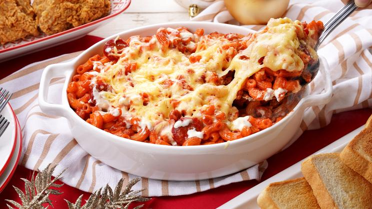

Home
Baked Macaroni

Cheesy Baked Macaroni is a good dish to prepare this holiday season. It is delicious, cheesy, and a sure crowd pleaser. This can be prepared during Christmas dinner, or you can bring this along for your potluck parties.
Ingredients:
- 1 lb. macaroni
- ¾ cup shredded cheddar cheese
Tomato Meat Sauce
- 1 lb. ground beef
- 1 Knorr beef cube
- 1 small red bell pepper chopped
- 1 small green bell pepper chopped
- 1 small yellow onion cubed
- 3 cloves garlic crushed and chopped
- 1 lb. tomato sauce
- Salt and ground black pepper to taste
- 3 tablespoons cooking oil
White Sauce
- 4 tablespoons butter
- ½ cup all-purpose flour
- 1 ¾ cups fresh milk
- ½ cup quick melt cheese
Steps:
- Cook the pasta according to package instructions. Set aside.
- Cook the tomato meat sauce by heating oil in a pot.
- Sauté the garlic, onion, and bell pepper for 3 to 5 minutes.
- Add the ground beef. Continue to cook until it browns.
- Add the Knorr Beef Cube. Stir.
- Pour the tomato sauce in the cooking pot. Stir and let boil.
- Sprinkle some salt and ground black pepper. Continue to cook for 5 minutes. Set aside.
- Prepare the white sauce by melting the butter in a pot.
- Add the all-purpose flour. Stir until the flour absorbs the butter and lumps are formed.
- Pour the milk in the cooking pot. Continuously stir the mixture while heating the milk until the flour dilutes completely. You can use a wire whisk while mixing to make the texture smooth (be careful with the Teflon pot though, if you are using one).
- Add the quick melt cheese. Continue to stir until the cheese completely melts and is well blended with the mixture. Turn the heat off.
- Arrange the macaroni in a mixing bowl. Pour the tomato meat sauce in and then mix well. Add a few tablespoons of the white sauce in the bowl along with some shredded cheddar cheese. Mix well.
- Arrange the macaroni mixture on a baking pan. Top with remaining white sauce. Make sure to spread the sauce all over to cover the top.
- Preheat oven to 375F. Bake for 15 to 18 minutes.
- Remove from the oven. Serve.
- Share and enjoy!